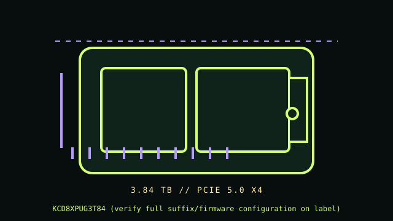

[ PCIE 5.0 NVME // IDENTIFIED PRODUCT ]
KIOXIA CD8P-V 3.84 TB U.2 (KCD8XPUG3T84)
Product-specific catalog record for the manufacturer code below. Performance figures are manufacturer-rated values, not independent test results.

IDENTIFY THE EXACT SKU: Compare the full MPN, label suffix, form factor, firmware and any OEM/security code before applying these notes. Family variations, capacity changes and factory thermal assemblies can materially change ratings and compatibility.
Manufacturer-identified specifications
| Product / MPN | KIOXIA CD8P-V 3.84 TB U.2 (KCD8XPUG3T84) — KCD8XPUG3T84 (verify full suffix/firmware configuration on label) |
|---|---|
| Capacity / form factor | 3.84 TB; 2.5-inch U.2, 15 mm enterprise drive. |
| Interface / lane width | PCIe 5.0 x4. |
| Protocol | NVMe 2.0. |
| Rated performance / endurance | KIOXIA CD8P-V product brief identifies PCIe 5.0 x4 and up to 12,000 MB/s sequential read for the 3.84 TB class; other throughput/endurance values depend on exact V/R model and datasheet line, so not generalized here. |
| Heatsink / revision caveat | Enterprise 2.5-inch U.2 device; use only a supported Gen5 NVMe backplane/carrier with designed airflow and power. It is not a SATA/SAS drop-in. CD8P-V is a Gen5 data-center product, distinct from PCIe 4.0 CD8-V. Confirm KCD8XPUG3T84 label and host qualification; do not infer endurance or write rates from the CD8P-R or other capacity/configuration. Boot support is server UEFI/backplane/controller specific. |
Compatibility, installation & service
- Check the exact server manual and KIOXIA CD8P-V product brief for backplane generation, x4 routing, carrier/height, power, firmware and qualified boot behavior. Gen5 sustained workload cooling requires platform airflow. Do not hot-remove unless the server and OS document safe NVMe hot-plug; quiesce data and array operations first. Record serial, firmware, health logs and follow vendor replacement/rebuild procedures.
- CD8P-V is a Gen5 data-center product, distinct from PCIe 4.0 CD8-V. Confirm KCD8XPUG3T84 label and host qualification; do not infer endurance or write rates from the CD8P-R or other capacity/configuration. Boot support is server UEFI/backplane/controller specific.
- Confirm host boot mode, OS NVMe support, CPU lane generation, socket length/keying, power and controller/backplane qualification from the system manual; physical fit alone does not establish compatibility.
- Before drive replacement, check backup integrity, encryption keys, firmware settings, recovery media and array rebuild plans. Use electrostatic-discharge precautions and never hot-remove unless the host documentation explicitly supports it.
Manufacturer references
- KIOXIA CD8P-V — manufacturer product page and capacity/form-factor product briefManufacturer specification/product reference. Verify the precise SKU and its capacity-specific table, manual or linked downloads against the installed drive label.
- NVM Express — specificationsProtocol standards reference; it does not establish product-specific features or host boot support.
- PCI-SIG — PCI Express specificationsInterface generation/lanes standards reference, not a substitute for the host motherboard/server manual.
Manufacturer peak ratings reflect stated test conditions and may not represent sustained writes in a thermally constrained or cache-exhausted host. Confirm current regional support, service status and warranty terms before use.